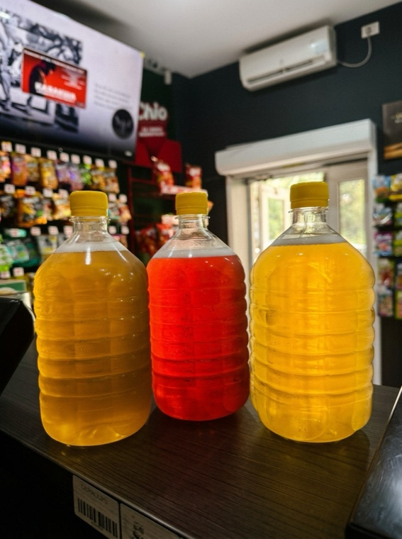

GHID GYM BEER · CHIȘINĂU
Helles vs. Pilsner vs. IPA & Weissbier
Când ai în față 32 de robinete de bere la draft, diferența dintre un Helles, un Pilsner, un Weissbier și un IPA te ajută să alegi din prima exact gustul pe care îl vrei.

Helles — blând, curat, dominat de malț
Originar din München, Helles-ul (ex. HOLZ Munich Helles) are amăreală foarte mică (10–15 IBU) și un gust neted, ușor dulceag de malț blond. Ideal dacă nu îți place berea amară.
Pilsner — crocant, floral, cu amăreală clasică
Originar din Plzeň (Cehia), Pilsnerul (ex. Götter Pilsner, Kozel Světlý, Hopfenbräu Pils) are 20–25 IBU și un final sec, revigorant, de hamei nobil.
Weissbier — cremos, de grâu, cu note de banană
Berea bavareză de grâu (ex. HOLZ Weissbier) are doar ~6 IBU, spumă bogată și arome naturale de banană coaptă și cuișoare.
IPA — explozie de citrice, pin și amăreală craft
India Pale Ale (ex. HOLZ IPA, Beermaster IPA, Götter IPA) folosește hamei american generos: 35–55 IBU, arome de grepfrut, mango și final aromat persistent.
Tabel comparativ rapid
| Stil | Alcool (ABV) | Amăreală (IBU) | Profil principal |
|---|---|---|---|
| Munich Helles | 4,3–4,7% | 12 IBU (foarte blând) | Malț curat, ușor dulceag |
| Pilsner | 4,0–4,5% | 20–25 IBU (echilibrat) | Crocant, floral, final sec |
| Weissbier | 5,0–5,9% | 6 IBU (aproape zero) | Cremos, banană & cuișoare |
| American IPA | 5,3–6,1% | 35–55 IBU (pronunțat) | Citrice, tropical, pin |
Ce înseamnă IBU pe eticheta unei beri?
IBU (International Bitterness Units) măsoară nivelul de amăreală dat de hamei: sub 15 IBU = foarte blând (Weissbier, Helles), 20–25 IBU = clasic (Pilsner), peste 40 IBU = craft intens (IPA).
Unde poți încerca aceste sortimente în Chișinău?
În magazinele GYM BEER din Botanica (bd. Cuza-Vodă 1/4) și Buiucani (str. Alba Iulia 23/2), zilnic 10:00–22:00.
Alte ghiduri utile GYM BEER: Bere vie nefiltrată vs. bere filtrată · 5 reguli ca berea la PET să rămână proaspătă · Cum recunoști peștele afumat proaspăt · Berării craft din Moldova: Holz, Beermaster & Götter · La ce temperatură se servește fiecare bere